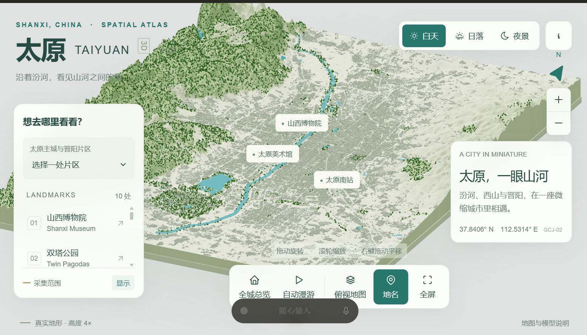
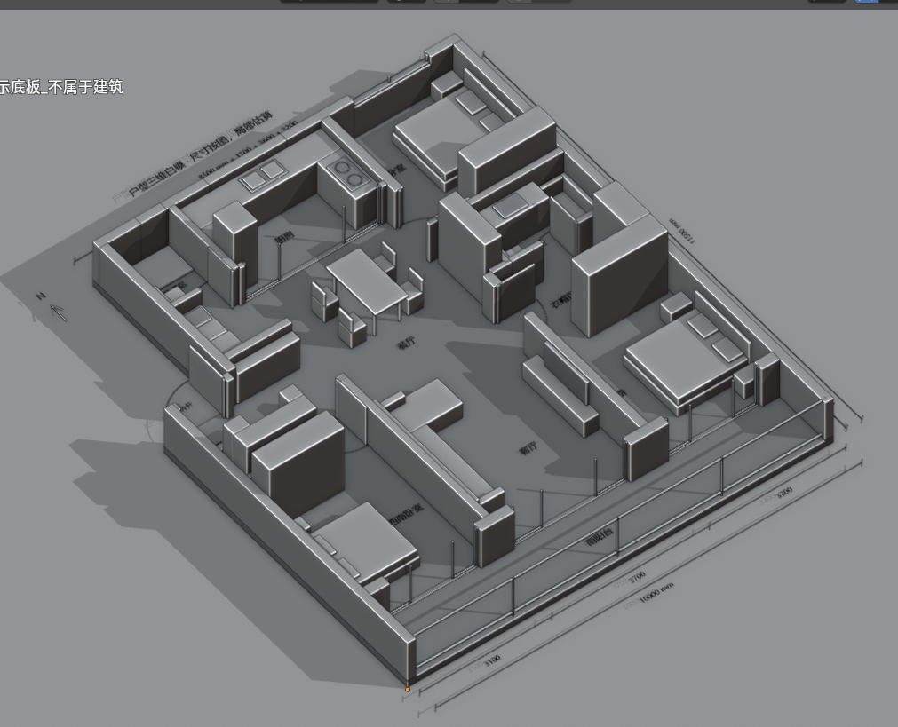

业余项目图集
关于城市展示与场景建模的业余探索 · 点击图片查看原图
太原全景展示

以三维城市全景呈现太原的地形、建筑与地标
Codex 结合 Blender 场景建模

使用 Codex 结合 Blender 制作场景模型，探索室内空间与家具布局
关于城市展示与场景建模的业余探索 · 点击图片查看原图

以三维城市全景呈现太原的地形、建筑与地标

使用 Codex 结合 Blender 制作场景模型，探索室内空间与家具布局